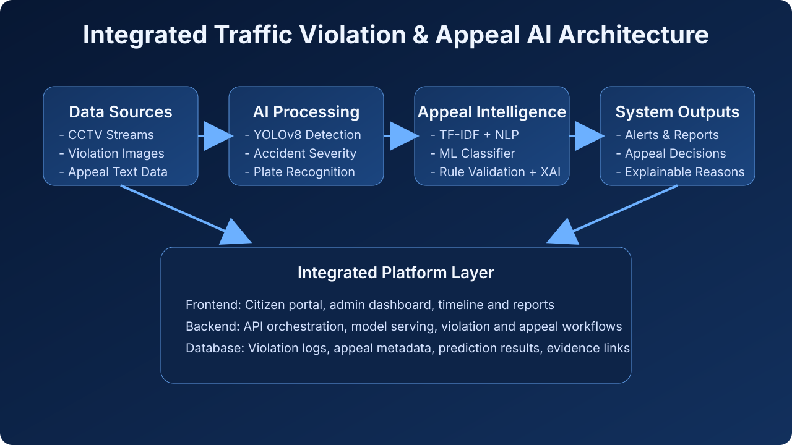

Literature Survey
Existing research highlights the rapid development of intelligent traffic monitoring systems using artificial intelligence and computer vision. YOLO-based object detection models have been widely adopted for real-time traffic violation detection due to their ability to perform fast and accurate object localization in dynamic environments [1]. Later YOLO variants, such as YOLOv4 and YOLOv5, further improved detection speed and accuracy, making them suitable for applications such as helmet detection, seatbelt compliance monitoring, and red-light violation identification [2], [3]. These models are capable of detecting multiple objects simultaneously, which is essential in complex traffic surveillance environments.
In addition, several studies have focused on accident detection and severity prediction using video analytics and motion-based analysis. Deep learning approaches can analyze collision patterns, vehicle movement, and abnormal traffic behavior to classify accidents into different severity levels. Such systems support faster decision-making by assisting authorities in identifying critical incidents and prioritizing emergency responses.
Recent advancements also explore the use of Natural Language Processing (NLP) techniques in traffic management systems, particularly for analyzing textual data such as user complaints, reports, and appeal descriptions. Traditional information retrieval techniques such as TF-IDF have been widely used to represent textual data and extract meaningful features for classification tasks [5]. These methods allow machine learning models to identify important terms and patterns from citizen-submitted data.
However, limited research has been conducted on integrating citizen appeal systems into traffic violation platforms. Most existing systems focus primarily on detection and enforcement, without providing transparency or enabling citizens to challenge or appeal violations through a digital process. Explainable Artificial Intelligence (XAI) techniques have been proposed to improve the interpretability of automated decision-making systems by providing understandable explanations for model predictions [4]. Nevertheless, only a few studies have explored rule-based appeal handling, and such approaches often lack intelligent prediction capability and explainability.
Therefore, integrating AI-driven appeal prediction with explainable decision-making remains an emerging research area. Such integration can improve transparency, fairness, and accountability in intelligent traffic violation management systems.
References
- J. Redmon, S. Divvala, R. Girshick, and A. Farhadi, “You Only Look Once: Unified, Real-Time Object Detection,” in Proc. IEEE Conf. Computer Vision and Pattern Recognition (CVPR), 2016, pp. 779–788.
- A. Bochkovskiy, C.-Y. Wang, and H.-Y. M. Liao, “YOLOv4: Optimal Speed and Accuracy of Object Detection,” arXiv preprint arXiv:2004.10934, 2020.
- G. Jocher et al., “YOLOv5,” GitHub repository, 2020. [Online]. Available: https://github.com/ultralytics/yolov5
- M. T. Ribeiro, S. Singh, and C. Guestrin, “Why Should I Trust You?: Explaining the Predictions of Any Classifier,” in Proc. 22nd ACM SIGKDD Int. Conf. Knowledge Discovery and Data Mining, 2016, pp. 1135–1144.
- G. Salton and C. Buckley, “Term-Weighting Approaches in Automatic Text Retrieval,” Information Processing & Management, vol. 24, no. 5, pp. 513–523, 1988.

 MongoDB
MongoDB